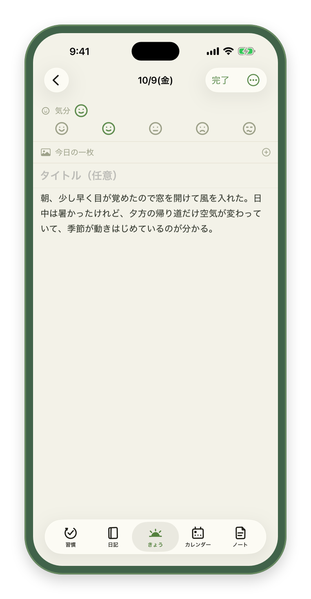
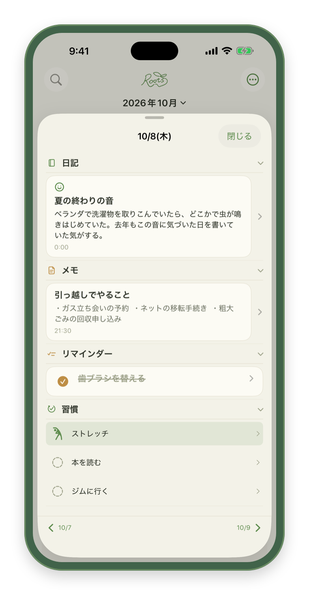
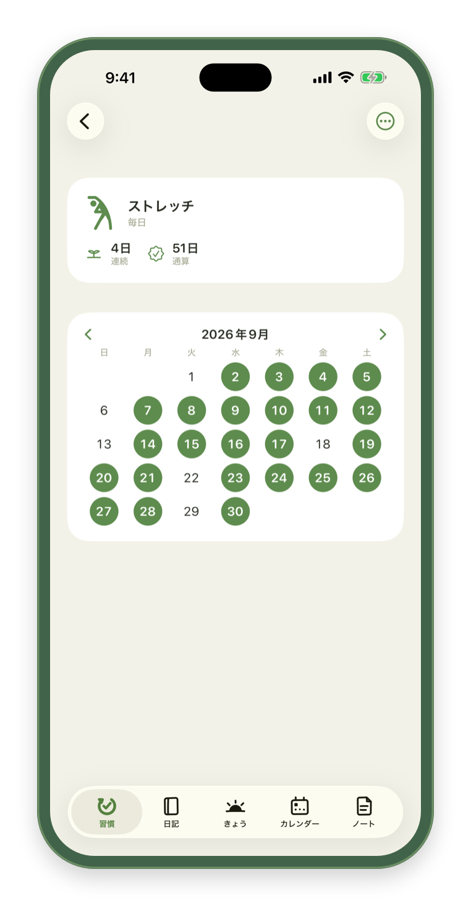
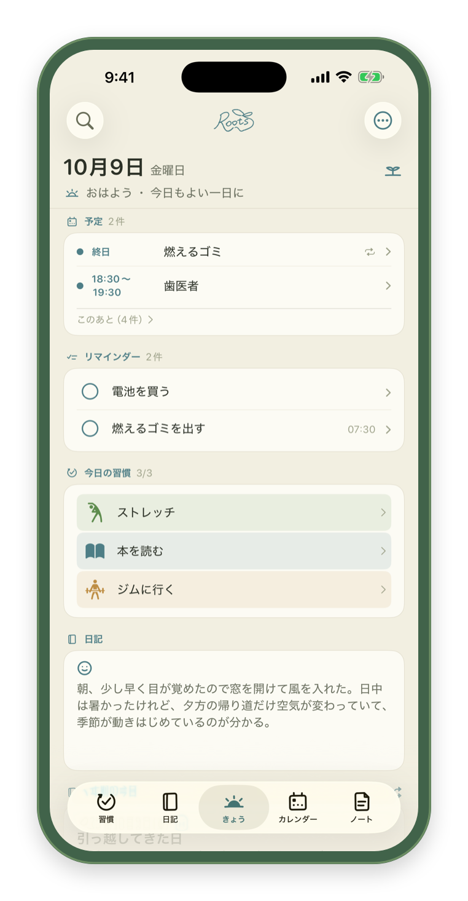
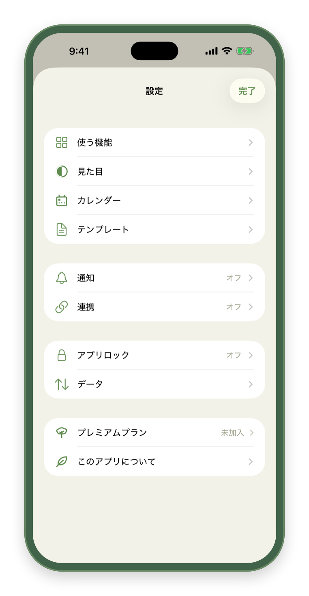

日記も、メモも、リマインダーも、予定も、習慣も。散らばりがちな毎日の記録を、Roots ひとつに集めるライフログアプリです。機能は多くても、ひとつひとつは小さくシンプルに。毎日開いても重く感じないことを大切にしています。
まず開くのは「きょう」
起動すると、いつも今日のページが開きます。今日の予定・リマインダー・習慣、そして日記の書きかけが1枚に並び、その日のことがひと目で分かります。ホーム画面のウィジェットからも、今日のページや次の予定、習慣の様子が見られます。

書くのは、一行からでいい
その日のことは日記へ、買い物リストのように日付のないものはメモへ。日記はタイトルなしで書き出せて、気分の顔をひとつ選ぶだけでもかまいません。その日の写真も1枚添えられます。

振り返りは、いつもの画面の中に
カレンダーの日付をタップすると、その日に書いた日記・メモ・リマインダーが並びます。「きょう」のページには過去の日記がしおりのように1枚挟まり、開くたびに入れ替わります。1年前の今日のことも、埋もれていた昔の一日も、ふと目に入ります。

続いていることが、静かに見える
習慣は「毎日」「曜日ごと」「N日おき」から選べて、読んだページ数のような数値も残せます。数字で追い立てる画面にはしていません。

自分に合う形に
日記・メモ・リマインダー・予定・習慣・気分・今日の一枚は、それぞれオンとオフを切り替えられます。メイン・日記・メモ・予定の色も、一色に揃えたり、機能ごとに分けたりできます。

記録は、あなたのもの
書いたものはこの iPhone の中に保存され、私たちのサーバーへ送ることはありません。広告も、利用状況の収集もありません。すべての記録は1つのファイルに書き出して読み戻せるので、機種変更の控えにも、生成AIに渡して振り返る材料にも使えます。Face ID やパスコードで、アプリごと鍵をかけることもできます。
無料で、記録の機能はすべて使えます
日記・メモ・リマインダー・予定、書き出しと読み込み、アプリロック、写真の添付、振り返り。ここに制限はかけていません。習慣は無料で3個まで、ウィジェットはホーム画面の4種類を使えます。
プレミアムプランでは次が加わります。
- 習慣をいくつでも作れます（無料では3個まで）
- 配色を全11色から選べます（無料では4色）
- ウィジェットをすべて置けます（メモ・カレンダー・今日の一枚と、ロック画面のウィジェットが加わります）
- ヘルスケアと天気の連携（その日の睡眠・体重・歩数、今日の天気を添えて表示）
- 月・年の記録（ひと月・一年の区切りに、振り返りと次の目標を書く場所）
最初の1週間は無料でお試しいただけます。料金はアプリの「設定 > プレミアムプラン」でご確認ください。